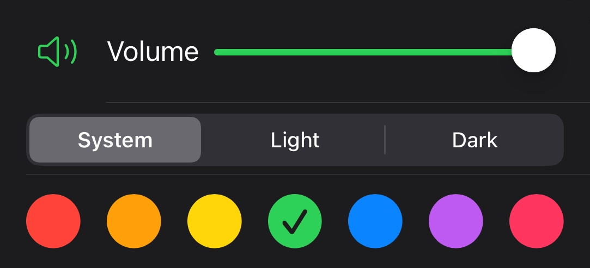

23 levels with 8+ million (223) combinations to solve
Free to play and no ads
Baudy dial-up Synthesizer
Seven different color schemes with matching icons
See your solved puzzle history
Privacy focused with no identifying
Free to play and ad-free (doesn't drain your pocket or your battery)
Baudy dial-up Synthesizer
7 different color schemes with matching icons
See your solved puzzle history